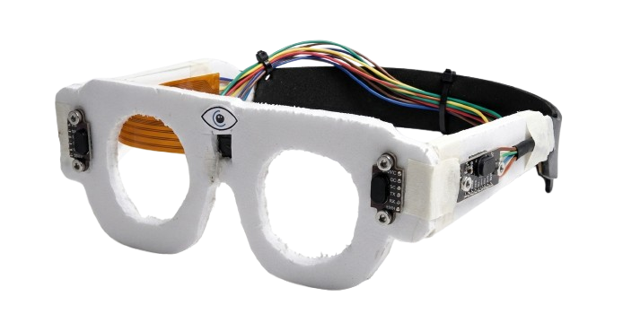

Asistencia visual potenciada por Inteligencia Artificial y sensores hápticos para una autonomía sin límites.

Mira el prototipo en acción enfrentando desafíos reales de movilidad.
Detección anticipada de obstáculos físicos desde el nivel del suelo hasta la cabeza.
Motores en las varillas que indican exactamente si el obstáculo está a la derecha o izquierda.
Batería de polímero de litio ultraligera oculta en el chasis del marco.
Algoritmo entrenado para reconocer cruces peatonales, semáforos y escaleras.
Extracción de texto en milisegundos para leer documentos, etiquetas y señales.
Transmisión de voz clara sin bloquear el canal auditivo del usuario, preservando el oído exterior.
Captura
Sensores escanean la escena en 360°
Análisis
La IA procesa y clasifica el riesgo
Alerta
Voz por conducción ósea y vibración
Acción
Desplazamiento seguro y fluido
Incrementa la confianza del usuario, reduciendo la ansiedad y la dependencia al salir del hogar.
Disminuye en un 85% la probabilidad de colisiones con objetos elevados que el bastón no detecta.
Componentes optimizados que permiten un coste de producción hasta un 70% menor al mercado actual.